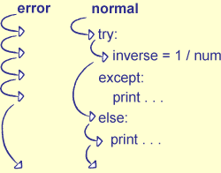
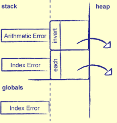

Executed when things don't go wrong inside the try block
9) Simple Exception Example
for num in [-1, 0, 1]:
try:
inverse = 1/num
except:
print 'inverting', num, 'caused error'
else:
print 'inverse of', num, 'is', inverse
inverse of -1 is -1
inverting 0 caused error
inverse of 1 is 1

Figure 15.1: Flow of Control in Try/Except/Else
10) Exception Objects
When Python raises an exception, it creates an object to hold information about what went wrong
Typically contains an error message
Can choose which errors to handle by specifying an exception type in the except statement
E.g., handle division by zero, but not out-of-bounds list index
values = [0, 1, 'momentum']
for i in range(4):
try:
print 'dividing by value', i
x = 1.0 / values[i]
print 'result is', x
except ZeroDivisionError, e:
print 'divide by zero:', e
except IndexError, e:
print 'index error:', e
except:
print 'some other error:', e
dividing by value 0
divide by zero: float division
dividing by value 1
result is 1.0
dividing by value 2
some other error: float division
dividing by value 3
index error: list index out of range
The except blocks are tested in order---whichever matches first, wins
If a "naked" except appears, it must come last (since it catches everything)
Generally better to use except Exception, e so that you have the exception object
11) Exception Hierarchy
Exceptions are organized in a hierarchy
E.g., ZeroDivisionError, OverflowError, and FloatingPointError are all types of ArithmeticError
A handler for the general type catches all its specific sub-types
Bad index to sequence (out of bounds or illegal type)
TypeError
Illegal type (e.g., trying to add integer and string)
ValueError
Illegal value (e.g., math.sqrt(-1))
EnvironmentError
Error interacting with the outside world
IOError
Unable to create or open file, read data, etc.
OSError
No permissions, no such device, etc.
Table 15.1: Common Exception Types in Python
12) Functions and Exceptions
Each time Python enters a try/except block, it pushes the except handlers on a stack
Just like the function call stack
When an exception is raised, Python searches this stack for the top-most matching handler
Often means jumping out of the middle of a function

Figure 15.2: Stacking Exception Handlers
def invert(vals, index):
try:
vals[index] = 10.0/vals[index]
except ArithmeticError, e:
print 'inner exception handler:', e
def each(vals, indices):
try:
for i in indices:
invert(vals, i)
except IndexError, e:
print 'outer exception handler:', e
# Once again, the top index will be out of bounds.
values = [-1, 0, 1]
print 'values before:', values
each(values, range(4))
print 'values after:', values
values before: [-1, 0, 1]
inner exception handler: float division
outer exception handler: list index out of range
values after: [-10.0, 0, 10.0]
13) Raising Exceptions
Use raise to trigger exception processing
Specify the type of exception you're raising using raise Exception('this is an error message')
Please make your error messages more informative...
for i in range(4):
try:
if (i % 2) == 1:
raise ValueError('index is odd')
else:
print 'not raising exception for %d' % i
except ValueError, e:
print 'caught exception for %d' % i, e
not raising exception for 0
caught exception for 1 index is odd
not raising exception for 2
caught exception for 3 index is odd
14) Exceptional Style
Always use exceptions to report errors instead of returning None, -1, False, or some other value
Allows callers to separate normal code from error handling
And sooner or later, your function will probably actually want to return that "special" value
Note: Python's own list.find breaks this rule
Returns -1 if something can't be found
Throw low, catch high
I.e., throw lots of very specific exceptions...
...but only catch them where you can actually take corrective action
Because every application handles errors differently
If someone is using your library in a GUI, you don't want to be printing to stderr
15) Handling Errors in Tests
Now know how to check for errors in tests: wrap the test in try/except
Pre- and post-conditions constrain how the function can evolve
Can only ever relax pre-conditions (i.e., take a wider range of input)...
...or tighten post-conditions (i.e., produce a narrower range of output)
Tightening pre-conditions, or relaxing post-conditions, would violate the function's contract with its callers
19) Assertions
Normally specify pre- and post-conditions using assertions
A statement that something is true at a particular point in a program
If the assertion's condition is not met, Python raises an AssertionError exception
For example:
Pre-condition: input argument is a non-empty list
Post-condition: two values from the list such that the first is less than the second
def find_range(values):
'''Find the non-empty range of values in the input sequence.'''
assert (type(values) is list) and (len(values) > 0)
left = min(values)
right = max(values)
assert (left in values) and (right in values) and (left <= right)
return left, right
Note that the post-condition isn't as exacting as it should be
Doesn't check that left is less than or equal to all other values, or that right is greater than or equal to
The code to check the condition exactly is as likely to contain errors as the function itself
Which is one of the reasons design by contract isn't as popular as it might be
Program as if the rest of the world is out to get you
"Fail early, fail often"
The less distance there is between the error and you detecting it, the easier it will be to find and fix
21) It's Never Too Late to Do It Right
Good practice: every time you fix a bug, put in an assertion and a comment
Because if you made the error, the right code can't be obvious
And you should protect yourself against someone "simplifying" the bug back in
def can_transmute(element):
'''Can this element be turned into gold?'''
# Bug #172: make sure the input is actually an element.
assert is_valid_element(element)
# Gold is trivial.
if element is Gold:
return True
# Trans-uranic metals and halogens are impossible.
if (element.atomic_number > Uranium.atomic_number) or \
(element in Halogens):
return False
# Look for a sequence of steps that leads to gold.
steps = search_transmutations(element, Gold)
if steps == []:
return False
else:
# Bug #201: must be at least two elements in sequence.
assert len(steps) >= 2
return True
22) Summary
The real goal of quality assurance isn't to find bugs: it's to figure out where they're coming from, so that they can be prevented
But without testing, no one (including you) has any right to rely on the program's output